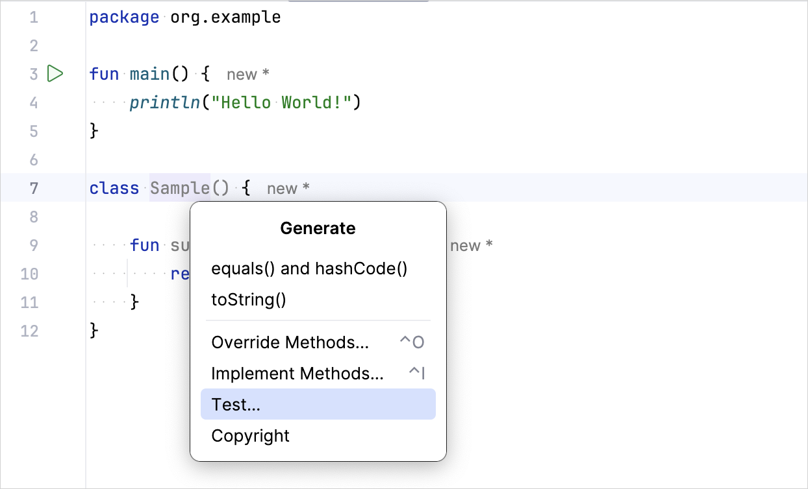
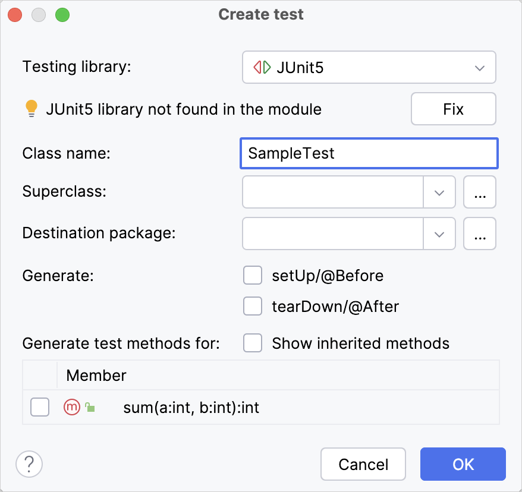

This tutorial shows you how to write a simple unit test in a Kotlin/JVM project and run it with the Gradle build tool.
In this project, you'll use the kotlin.test library and run the test using JUnit. If you're working on a multiplatform app, see the Kotlin Multiplatform tutorial.
To get started, first download and install the latest version of IntelliJ IDEA.
Add dependencies
Open a Kotlin project in IntelliJ IDEA. If you don't have a project, create one.
Open the build.gradle(.kts) file and check that the testImplementation dependency is present. This dependency allows you to work with kotlin.test and JUnit:
dependencies {
// Other dependencies.
testImplementation(kotlin("test"))
}
dependencies {
// Other dependencies.
testImplementation 'org.jetbrains.kotlin:kotlin-test'
}
Add the test task to the build.gradle(.kts) file:
tasks.test {
useJUnitPlatform()
}
test {
useJUnitPlatform()
}
Here's a complete code for the build.gradle.kts:
plugins {
kotlin("jvm") version "2.1.20"
}
group = "org.example"
version = "1.0-SNAPSHOT"
repositories {
mavenCentral()
}
dependencies {
testImplementation(kotlin("test"))
}
tasks.test {
useJUnitPlatform()
}
Add the code to test it
Open the Main.kt file in src/main/kotlin.
The src directory contains Kotlin source files and resources. The Main.kt file contains sample code that prints Hello, World!.
Create the Sample class with the sum() function that adds two integers together:
class Sample() {
fun sum(a: Int, b: Int): Int {
return a + b
}
}
Create a test
In IntelliJ IDEA, select Code | Generate | Test... for the Sample class:

Specify the name of the test class. For example, SampleTest:

IntelliJ IDEA creates the SampleTest.kt file in the test directory. This directory contains Kotlin test source files and resources.
Add the test code for the sum() function in SampleTest.kt: